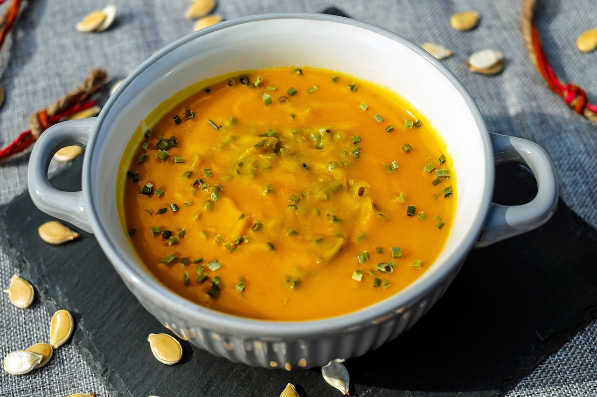
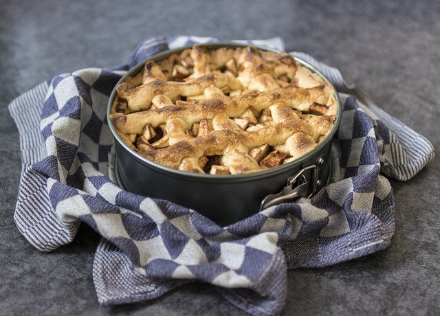

O que vamos fazer hoje?
Receitas em Destaque


Sopa de Abóbora
Uma sopa quentinha e reconfortante feita com abóbora fresca e especiarias.
Ver Receita

Torta de Maçã
Uma sobremesa clássica com maçãs frescas, canela e uma crosta de massa de dar água na boca.
Ver ReceitaSobre Nós
Bem-vindo ao nosso projeto apaixonante, um site de culinária único e repleto de sabor, concebido e construído com dedicação por um grupo de estudantes dedicados de Análise e Desenvolvimento de Sistemas. Unindo nossa paixão por tec...Ler mais